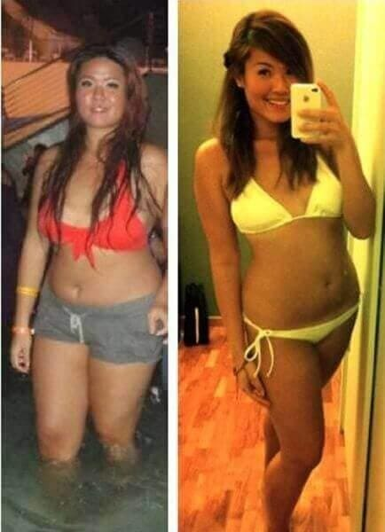
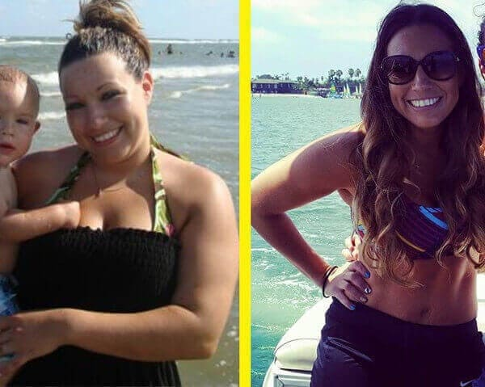
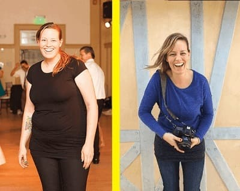
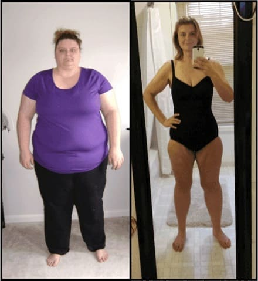

Witam wszystkich! Wszyscy zauważyli, że bardzo dużo schudłam i zaczęli bombardować mnie pytaniami . Ze wszystkich sił próbowałam każdemu odpowiadać i każdego wspierać, ale nie udało mi się – przy takiej ilości odpowiedzi, musiałabym „zamieszkać w sieci“. Dlatego postanowiłam zamieścić ten post tutaj, żeby odpowiedzieć na to pytanie: „Jak udało Ci się schudnąć 31 kg?“ (to nie znaczy, że nie możecie do mnie pisać albo zadawać pytań, ten post jedynie ułatwia mi życie).
Transformacja zajęła mi jedynie DWA MIESIĄCE! NIESAMOWITY WYNIK, PRAWDA?

Nigdy nie byłam chuda, ale zauważyłam, że tyję coraz bardziej i bardziej. Na moim brzuchu pojawiły się trzy okropne fałdy, w bikini wyglądałam jak buldog, a moje biodra, nogi i tyłek cały czas rosły! Postanowiłam stać się fit i za wszelką cenę zdobyć zdrowe ciało, dlatego przestałam jeść tłuste, smażone potrawy i zrezygnowałam z niezdrowych wieczornych posiłków. Rano chodziłam biegać, a wieczorami trenowałam na siłowni, ale zamiast schudnąć, nadal tyłam! Po miesiącu waga pokazała wstrząsający wynik – PRAWIE 100 KG! Moja dieta stawała się coraz bardziej restrykcyjna, wykluczyłam mięso, chleb, frytki i słodycze. Jadłam już tylko owoce i warzywa, a piłam samą wodę. Wypróbowywałam przeraźliwie drogie herbatki odchudzające i tabletki, ale wydawało się, że nic na mnie nie działa . Po pewnym czasie zgubione kilogramy wracały do mojego wyczerpanego organizmu.
Nie pomagały ani diety ani tabletki, to była zwykła ściema!
Treningi są za to za ciężkie i zbyt
długo trzeba czekać na jakiekolwiek postępy. To co miałam robić?
Po stosie diet, tabletek odchudzających, godzinach spędzonych na siłowni i tysiącach złotych wypłaconych mojemu osobistemu trenerowi - całkowicie się poddałam. Jednak pewnego dnia natknęłam się na artykuł o : przeczytałam, że ten proszek na bazie herbaty matcha, oleju MCT, awokado i ekstraktu kokosowego, przyspiesza przejście organizmu do ketozy, zmniejsza apetyt, usuwa toksyny z organizmu, przyspiesza metabolizm, pomaga organizmowi spalić tłuszcz 3-4 razy szybciej, przekłada rezerwy tłuszczu na energię i normalizuje poziom cholesterolu. Słyszałam też, że Demi Moore, Katy Perry, J-Lo i wielu innych celebrytów schudło, pijąc rano szklankę tego pysznego napoju. Powiem wam szczerze: byłam sceptyczna, ale szczerze mówiąc, próbowałam wszystkiego, aby schudnąć, ale nigdy nie zrzuciłam nadwagi. Postanowiłam więc spróbować , nie miałam nic do stracenia oprócz nadmiaru tłuszczu!
Miliony kobiet z Europy i USA pozbyło się zbędnych kilogramów dzięki . Badania pokazały: 96,7% osób schudło 12-17 kg w trzy tygodnie!

No więc, postanowione! Weszłam na ich stronę internetową , sprawdziłam wszystko dwa razy i zamówiłam ten suplement. Przyszedł w ciągu kilku tygodni. Przeczytałam ulotkę i zaczęłam raz dziennie pić szklankę (150 ml) gorącej wody z jedną łyżeczką proszku .
Wyniki
Już po dwóch tygodniach efekty były szokujące – schudłam 6 kg! Zniknęły obrzęki i poprawiła mi się cera! Moje biodra i brzuch zrobiły się zauważalnie mniejsze – i nawet humor mi się poprawił! Zaczęłam wierzyć, że znów mogę być piękna bez żadnych diet czy ćwiczeń! Więc nadal jadłam wszystko, co chciałam ! Miałam już po dziurki w nosie głodowania i treningów...
Pod koniec trzeciego tygodnia schudłam kolejne 12 kg! Byłam zdecydowanie bardziej fit, co zainspirowało mnie do wchodzenia po schodach, zamiast za każdym razem jeździć windą. To, co wcześniej wydawało się ciężkim treningiem, nagle zmieniło się w przyjemność! Nie mogłam uwierzyć w to, co się stało, tylko dlatego że postępowałam zgodnie z ulotką dołączoną do suplementu! Jeśli ja mogłam to zrobić – to każdy mógł! Zaledwie dwa miesiące później byłam lżejsza o 31 kg!
Do swojej wymarzonej wagi dotarłam w ciągu 60 dni. Nie miałam już brzucha, schudłam 31 kg i zyskałam ciało, o którym nigdy nie ważyłam się marzyć !
A tak przy okazji została przetestowana przez Krajową Akademię Nauk w 2014 r. Wyniki wywołałyby sensację, ale nigdy nie zostały upublicznione. Moim zdaniem dlatego, że przez nie firmy farmaceutyczne, kluby fitness, dietetycy i niebotycznie drogie kliniki zwyczajnie by zbankrutowały! I nic dziwnego: Suplement jest śmiesznie tani!
Teraz ciągle polecam moim znajomym i kolegom z pracy. Ważne: zamawiajcie oficjalny produkt ze strony internetowej, bo inaczej możecie się nadziać na podróbkę. Ja jestem zadowolona z osiągniętych wyników i wierzę, że i wy będziecie szczęśliwe! Zapomnijcie o stereotypach: nie potrzebujecie diet ani treningów, żeby mieć fajną figurę!
P.S.: Każdego, kto schudł dzięki , bardzo proszę o podzielenie się swoimi wynikami właśnie tutaj! Pomożecie przekonać innych, że to naprawdę pomaga! Pozdrawiam!
Hejo! Wspaniałe wieści! Przedstawiciele firmy sprzedającej suplement skontaktowali się ze mną, żeby zaoferować 50% zniżkę pierwszym 100 odwiedzającym mojego bloga, którzy złożą tutaj zamówienie!
komentarze
Droga Izabelo! Dzięki, że zainspirowałaś mnie do tego, żeby wreszcie pozbyć się tej koszmarnej nadwagi! Minęły 3 tygodnie i schudłam 28 kg. Teraz ważę 57 kg, tak jak obiecałaś, i już się nie waha. Najlepsze życzenia.
Od dawna marzyłam o szczupłej sylwetce, przeczytałam o na tej stronie trzy miesiące temu. Wahałam się, czy zamówić, ale mama mnie przekonała. Niewielka cena z spełnione marzenia! Teraz razem chudniemy. Ale jej idzie lepiej niż mnie :(
Tak się cieszę, że znalazłam tego bloga. Na pewno wypróbuję ten suplement ! Dzięki!
Cześć! Skorzystałam z twojej rady i wypróbowałam no i cóż... naprawdę ocaliłaś moją rodzinę i małżeństwo :) Izabela jesteś wspaniała! Mój mąż zaczął ostatnio zupełnie inaczej mnie traktować. Jestem bardziej pewna siebie... teraz czuję się ŚWIETNIE! =)
Hej dziewczyny, ja też wkrótce dołączę do grona szczuplaczków!!! Właśnie przyszło moje opakowanie ! Dziękuję, że podzieliłaś się swoimi doświadczeniami. Zmotywowałaś mnie do rozpoczęcia kuracji. Mam nadzieję, że niedługo pozbędę się całego tłuszczu. Też napiszę tu o swoich wynikach.
Cześć Nikola! Bardzo się cieszę! Najważniejsza jest wewnętrzna harmonia, ale nie można jej osiągnąć, jeśli nie jesteśmy zgrani z własnym organizmem. Nie mogę się doczekać, żeby przeczytać o twoich pierwszych efektach. I przypominam: lepszy niewielki progres niż żaden! Powodzenia!
Droga Izabelo! Tak się cieszę, że natknęłam się na twoją stronę i mam nadzieję, że znajdę tu trochę wsparcia. Próbowałam już wielu sposobów na odchudzanie, ale niestety efekty zawiodły moje oczekiwania. Mam 1,52 m i ważę 97 kg – to upokarzające!!! Muszę schudnąć co najmniej 36 kg, a wydaje się być ostatnią deską ratunku dla mnie...
Cześć Karolino! Nie tylko ja schudłam dzięki stosowaniu tego suplementu ! Moi znajomi też wypróbowali i to naprawdę DZIAŁA, dlatego mogę Ci zagwarantować, że na 100% tym razem nie rozczarujesz się. Wszyscy cieszymy się z efektów, jakie uzyskaliśmy i tobie życzymy tego samego!
Drogie panie, chcę jeszcze raz poprosić was, byście podzieliły się swoimi wynikami z nami, ponieważ bardzo pomoże to innym! Być może to wiadomość właśnie od was przekona kogoś, by wreszcie stał się piękny i naprawdę szczęśliwy!
Wczoraj przyszła paczka, a dziś zaczynam nowe życie! Nie mogę się doczekać, żeby zobaczyć pierwsze efekty :)
Droga Izabelo! Dziękuję bardzo! Bardzo szybko schudłam, ale co ważniejsze, waga nie wraca tak jak kiedyś! To cud. Polecam swoim przyjaciółkom, bo nie mogę już patrzeć, jak głodzą się na śmierć.
Jutro mam randkę i idziemy w jakieś wykwintne miejsce. Kilka tygodni temu sama myśl o takiej kolacji na mieście bez zastanawiania się, ile kalorii zawiera mój posiłek, byłaby koszmarem. A teraz mam to gdzieś! Wiem, że mogę jeść, co chcę i już nie przytyję. Schudłam 27,5 kg dzięki w zaledie miesiąc! Dziękuję Izabelo!
WOW, Maria, naprawdę udało Ci się to osiągnąć w miesiąc? Może też powinnam kupić sobie trochę ... przytyłam kolejne 3 kg, to okropne...
Schudłam 18 kg w 6 tygodni!!! To niewiarogodne! Dziękuję Izabela!!!!!
Gratuluję, Alicja! Twój wynik jest niebywały! Teraz nie wątpię już w !!!
Piszę, jaki uzyskałam efekt, tak jak obiecałam. To jest cudowne. Udało mi się schudnąć 15 kg w 6 tygodni!!! WOW!
Przestańcie wątpić, to naprawdę działa! Moja znajoma też schudła dzięki – jakieś 18 kg w dwa miesiące, jeśli się nie mylę. Imponujące, nie?
Dziękuję za wasze opinie, drogie panie! Dzięki wam postanowiłam zamówić i zaczynam pracę nad sobą! Schudłam już 5 kg, a do celu brakuje mi jeszcze tylko 6 kg!
Moje trzy kuzynki zupełnie się zmieniły, odkąd przez kilka miesięcy piły ten suplement . Z typowych pulchnych dziewczyn zmieniły się w oszałamiająco piękne damy!
A tu macie moje wyniki: Schudłam 12,5 kg bez choćby jednej sesji na siłowni! Wszystkich to wprawia w osłupienie :))
Cześć Grażynko! Bardzo się cieszę! Ale o ile pamiętam, chciałaś schudnąć trochę więcej. To wspaniały początek! Oby tak dalej! Powodzenia!
Cześć Iza! Przeczytałam twój post i postanowiłam zamówić . Niedługo spotkam się z moimi kolegami i koleżankami z liceum. Dawno się nie widzieliśmy i wstyd byłoby pokazać się ze 115 (!!!) kg na plecach w ubraniach w rozmiarze XXL!!! Jako 17-latka byłam taka szczupła... Teraz ważę 68 kg, a na wieczór kupiłam sukienkę w rozmiarze M. Przede mną jeszcze sporo do zrobienia, ale jestem ci bardzo wdzięczna za to, że zmotywowałaś mnie do tego, żeby zacząć! Pozdrawiam!
Twoje wyniki są szokujące... ale czy ja dobrze zrozumiałam, że nie muszę stosować żadnej diety? Obrzydzenie mnie bierze na samą myśl o kolejnej diecie niskowęglowodanowej albo czymś podobnym... proszę, koniec z głodowaniem!
Asia, dobrze zrozumiałaś. Przy nie trzeba stosować żadnej diety. Dobrze wiemy, że jak tylko skończymy dietę, waga wraca – a jeśli stosujesz , to nic takiego się nie zdarzy. Więc nie martw się, po prostu spróbuj i przekonasz się!
Nie mogę się powstrzymać, muszę się tym z wami podzielić!!! Po dwóch miesiącach schudłam 20 kg!!! Ten suplement to prawdziwy skarb ! Mąż i ja mamy drugi miesiąc miodowy :)))
Zacząłem stosować ten suplement 3 miesiące temu i schudłam 23 kg! Wstyd się przyznać, że ważyłam 90 kg i za bardzo się wstydziłam isć na plażę na wakacjach...
Naprawdę muszę szybko schudnąć 14 kg... natknęłam się na tę stronę internetową i zafascynowały mnie komentarze dziewczyn, które pisały o swoich wynikach. Na pewno dam szansę i zobaczymy, co się stanie :) życzcie mi powodzenia!
Siostra kupiła mi kilka opakowań z Japonii w zeszłym roku. Najpierw pomyślałam, że to niedorzeczne – jak można schudnąć bez diety i treningów – ale przekonała mnie, żebym wypróbowała – nigdy nie przypuszczałam, że to możliwe... Zaczęłam pić ten suplement w lutym, a w maju konieczna okazała się wymiana całej garderoby! Wszystko było na mnie po prostu za duże!!! Schudłam z 92 kg do 58 kg w mniej niż dwa miesiące!!!!!! Minęły dwa lata, a moja waga się nie zmieniła! Teraz jestem szczęśliwą dziewczyną. Wyciągnij wnioski i spróbuj pić przez kilka tygodni... a zobaczysz...
Wow, Dominika, osiągnęłaś imponujący wynik! Drogie panie, chcę przeprosić za to, że nie byłam w stanie odpowiedzieć wam wszystkim, ale sprawdzam skrzynkę i chcę powiedzieć, że bardzo się cieszę i jestem dumna z waszych wyników!
To było tak dawno, że teraz wydaje mi się prześmieszne, że kiedyś ważyłam 79 kg... Teraz ważę 54 kg, piję, co chcę, jem, co chcę i waga się nie zmienia! Z dumną podzielę się z wami moimi zdjęciami przed i po:
Droga Izabelo i wszyscy, którzy zostawiliście tu swoje opinie! Brak mi słów, żeby opisać swoją wdzięczność i szczęście... Mam 33 lata i ostatnie kilka lat były dla mnie piekłem przez moją wagę. Nawet najlżejszy trening to było prawdziwe wyzwanie. Koszmarnie bolały mnie plecy, szybko się męczyłam i byłam wyczerpana... Czytałam wasze wpisy i postanowiłam wypróbować – a wyniki przekroczyły moje oczekiwania! Teraz ważę 63 kg – a ważyłam 91 kg! Schudłam te 28 kg w trzy miesiące!!! Czuję się świetnie, wyglądam 10 lat młodziej! Nie mam już duszności i plecy mnie nie bolą!
Piłam jakąś japońską herbatę odchudzającą i naprawdę pomogła mi schudnąć 2 kg, ale potem wróciły po 3 tygodniach :( Proszę powiedzcie, czy z będzie tak samo?
Cześć Anna. Nie martw się, tak się nie stanie. Spójrz tylko na zdjęcia tych pięknych kobiet i moje – szybko schudłyśmy i nie przytyłyśmy od tamtej pory ani kilograma! Ekstrakt z niebieska herbata matcha naprawdę działa i pomaga twojemu organizmowi przejąć kontrolę nad gromadzącym się tłuszczem. Powinnaś wypróbować choć przez tydzień i od razu zobaczysz efekty!